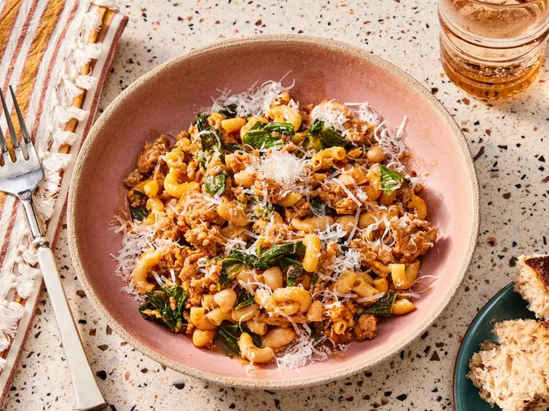

Home
Lasagna

Description
TPasta fazool is a classic Italian-American comfort food. This recipe works with any sausage, but I like the
fennel and anise flavors of sweet Italian sausage with the beans. A hearty soup that's fast and easy to put
together. This recipe makes enough for two large portions or four smaller ones.
Be sure to share it with friends!
Ingredients
12 ounces sweet bulk Italian sausage
3 cups chicken broth, or more as needed, divided
¼ teaspoon crushed red pepper flakes, or to taste
Salt and freshly ground black pepper to taste
3 cups chopped Swiss chard
1 (15 ounce) can cannellini (white kidney) beans, drained
¼ cup grated Parmigiano-Reggiano cheese, plus additional for serving, or to taste
Steps
Gather the Ingredients
Heat oil in a skillet over medium-high heat. Cook and stir sausage in the hot skillet until browned and crumbly,
about 5 minutes. Reduce heat to medium. Add diced celery and chopped onion. Cook until onions are translucent, 4
to 5 minutes. Add dry pasta; cook and stir for 2 minutes.
Stir in tomato paste until evenly distributed, 2 to 3 minutes. Pour in 3 cups broth; increase heat to high and
bring to a boil. Stir in red pepper flakes, oregano, salt, and pepper. Reduce heat to medium and let simmer,
stirring often, for about 5 minutes. Add more broth if needed.
Place chopped chard in a bowl. Cover with cold water and rinse leaves; any grit will fall to the bottom of the
bowl. Transfer chard to a colander to drain briefly; add to soup. Cook and stir until leaves wilt, 2 to 3
minutes.
Stir in white beans; continue cooking and stirring until pasta is tender, 4 to 5 minutes. Remove from heat and
stir in grated cheese. Serve topped with additional grated cheese.
Enjoy!